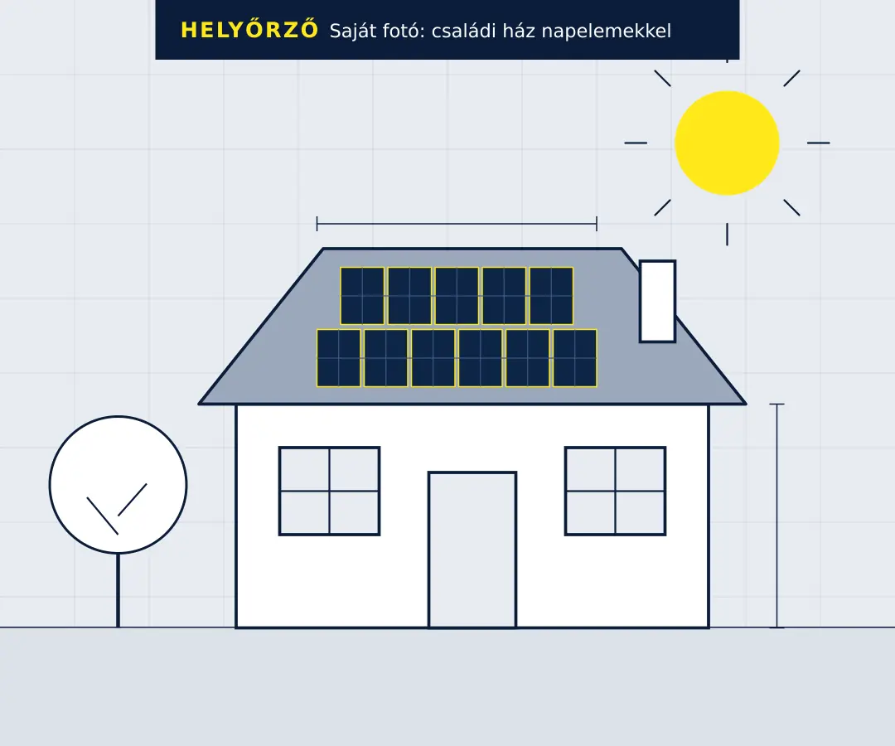
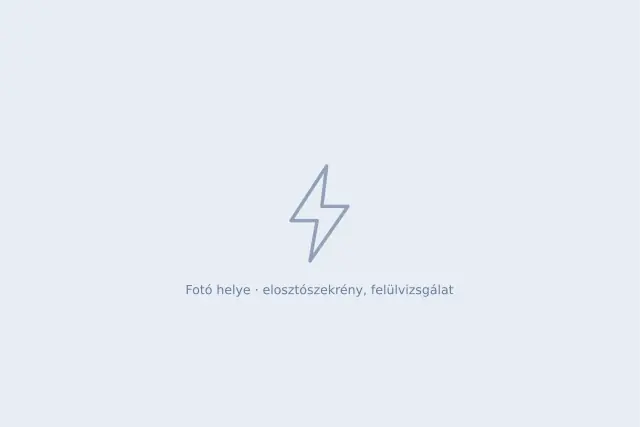
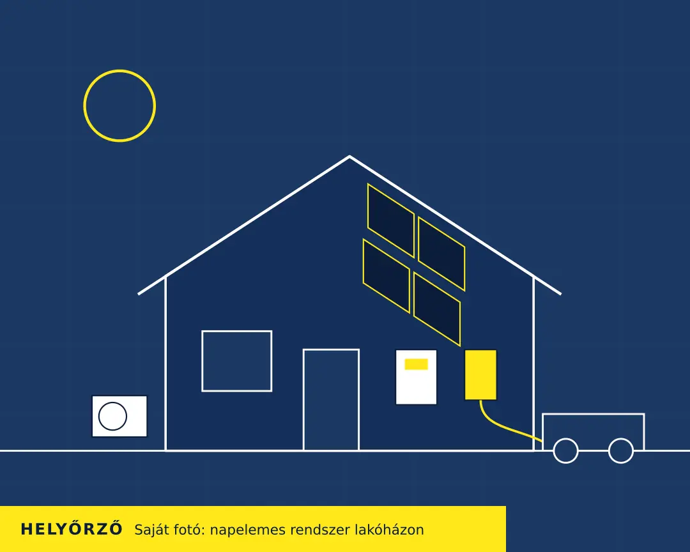

Családi házak és lakások · [Szolgáltatási terület]
Biztonságosabb otthon. Saját energiatermelés.
Érintésvédelmi felülvizsgálat és napelemes rendszerek lakossági ügyfeleknek. Válaszd ki, miben segíthetünk, és beszéljük át otthonod igényeit.


01 Érintésvédelem és villamos biztonsági felülvizsgálat
Tudd meg, milyen állapotban van otthonod elektromos hálózata.
A felülvizsgálat célja, hogy kiderüljön: a lakás vagy a ház elektromos rendszere biztonságosan működik-e, és van-e benne olyan hiányosság, amely áramütés- vagy tűzveszélyt jelenthet.

Melyik helyzet ismerős?
-
Régebbi ingatlant vásároltál vagy örököltél.
Nem tudod, mikor nyúltak utoljára a hálózathoz, és mi maradt meg az eredeti szerelésből.
-
Felújítás előtt szeretnéd megismerni a hálózat állapotát.
Burkolás és festés előtt érdemes tudni, milyen állapotban vannak a vezetékek és a védelmek – utólag sokkal nehezebb hozzájuk férni.
-
Ingatlan eladásához vagy bérbeadásához kapcsolódó felülvizsgálatról érdeklődsz.
Tudni szeretnéd, mire számíts, mielőtt a vevővel vagy a bérlővel megállapodsz.
-
Bizonytalan vagy a meglévő elektromos rendszer biztonságában.
Gyakran lekapcsol a biztosíték, melegszik egy konnektor vagy dugvilla, esetleg egyszerűen nem tudod, mi van a falban.
Szikrázást, égett szagot vagy áramütést tapasztalsz? Kapcsold le az érintett áramkört, és ne használd, amíg szakember meg nem nézte.
Hogy a te helyzetedben előírás-e a felülvizsgálat, az az ingatlantól és a céltól függ. Ha ebben bizonytalan vagy, írd meg az ajánlatkérésben, és az egyeztetéskor átbeszéljük.
Így zajlik a felülvizsgálat
-
1. lépés
Egyeztetés
Megbeszéljük, milyen ingatlanról van szó, miért szeretnéd a felülvizsgálatot, és mikor tudunk kimenni.
-
2. lépés
Helyszíni vizsgálat és mérések
Átnézzük az elosztót, a vezetékeket és a szerelvényeket, majd műszerrel mérjük a védelmek működését. A mérések egy részéhez rövid időre áramtalanítani kell.
-
3. lépés
Eredmények és teendők
Elmondjuk, mit találtunk, mi sürgős és mi várhat. A vizsgálatról [átadott dokumentáció, pl. írásos jegyzőkönyv] készül.

02 Napelemes rendszerek
Az otthonodhoz és a fogyasztásodhoz illő napelemes rendszer.
Nincs két egyforma tető és két egyforma háztartás. Hogy milyen rendszer illik hozzád, ahhoz meg kell ismernünk az ingatlan adottságait, a jelenlegi fogyasztásodat és azt, mit tervezel a következő években.
Megtérülési időt és megtakarítást csak a te adataidból, számítással lehet becsülni – ezért ezekre nem mondunk számokat előre.
Ezeket érdemes átbeszélni
-
Mennyi áramot használ a háztartás?
Az elmúlt egy év villanyszámláiból kiderül az éves fogyasztás, és az is, mikor használod a legtöbb áramot. Ebből indul ki a rendszer méretezése.
-
Milyen adottságai vannak a tetőnek?
Számít a tájolás, a dőlésszög, a szabad felület és az árnyékolás – fák, kémény, szomszéd épület –, valamint a tetőszerkezet és a héjazat állapota.
-
Várható-e új elektromos fogyasztó, például klíma vagy autótöltő?
Egy klíma, hőszivattyú vagy elektromosautó-töltő jelentősen megnövelheti a fogyasztást. Ha tudod, hogy jön, érdemes már most számolni vele.
-
Milyen rendszer illeszkedhet ezekhez az igényekhez?
A válasz a fenti adatoktól és az aktuális elszámolási szabályoktól függ. Az ajánlatban leírjuk, milyen rendszert javaslunk, és miért azt.
Amit a napelemes munkából vállalunk
- [Ellenőrizendő: helyszíni felmérés]
- [Ellenőrizendő: rendszertervezés]
- [Ellenőrizendő: kivitelezés, telepítés]
- [Ellenőrizendő: ügyintézés az áramszolgáltatónál]
Régebbi ingatlannál a napelem előtt érdemes a meglévő hálózatot is átnézetni. Az ajánlatkérésben jelölheted, hogy mindkét szolgáltatás érdekel.
Napelemes rendszerre kérek ajánlatot03 A munka menete
Az ajánlatkéréstől a munka megkezdéséig.
Mindkét szolgáltatásnál ugyanígy indulunk. A lépések között mindig tudod, mi következik.
-
Megírod, melyik szolgáltatás érdekel.
Az űrlapon kiválasztod a szolgáltatást, és megadod, hol van az ingatlan. Egy-két mondat a helyzetről sokat segít.
-
Egyeztetjük az ingatlan adatait és az igényeidet.
Pontosítjuk, mire van szükség. Napelemnél ekkor kérjük el a fogyasztási adatokat és néhány fotót.
-
Meghatározzuk a szükséges következő lépéseket.
Elmondjuk, kell-e helyszíni bejárás, mi kerül bele az ajánlatba, és mire számíthatsz.
-
Az egyeztetett feltételek alapján megkezdődik a munka.
A munka akkor indul, amikor a tartalmában, az árában és az időpontjában megállapodtunk.
Referenciák
Lakossági munkák, amelyeket elvégeztünk.
-
[Milyen feladatot oldottunk meg?]
[Rövid leírás: kiinduló helyzet, elvégzett munka, eredmény]
- [Jogosultság megnevezése]
- [Nyilvántartási szám, kiadó szervezet]
Gyakori kérdések
Amit az ajánlatkérés előtt kérdezni szoktak.
Érintésvédelem
Mit ellenőriznek a felülvizsgálat során?
Először szemrevételezéssel átnézzük az elosztót, a vezetékek, a csatlakozások és a szerelvények állapotát. Utána műszerrel mérünk: jellemzően a védővezető folytonosságát, a szigetelési ellenállást, a hibahurok-impedanciát és az áram-védőkapcsoló kioldását.
Hogy pontosan mi kerül bele a vizsgálatba, az a felülvizsgálat típusától függ – ezt az egyeztetéskor megmondjuk.
Hogyan készüljek a helyszíni vizsgálatra?
Gondoskodj róla, hogy hozzáférjünk az elosztószekrényhez, a mérőhelyhez és minden helyiséghez. Ha van korábbi jegyzőkönyv vagy villamos terv, tedd félre.
A mérések idején rövidebb ideig nem lesz áram, ezért a számítógépet és az áramszünetre érzékeny eszközöket érdemes előre lekapcsolni.
Mi történik, ha hiányosságot találnak?
Megmutatjuk és leírjuk, mi a hiba, mennyire sürgős, és mit kell tenni a megszüntetéséhez. Közvetlen veszélyt jelentő hibánál javasoljuk az érintett áramkör azonnali lekapcsolását.
[Ellenőrizendő: vállaljátok-e a hibák javítását és az utána következő ellenőrző mérést?]
Napelemes rendszerek
Milyen adatok szükségesek az ajánlatkéréshez?
Kezdésnek elég a település és pár mondat az ingatlanról. Az egyeztetéshez jól jön:
- az elmúlt 12 hónap villanyszámlái vagy az éves fogyasztás,
- a csatlakozás típusa (egy- vagy háromfázisú), ha tudod,
- néhány fotó a tetőről és a mérőhelyről,
- a tervezett új fogyasztók, például klíma vagy autótöltő.
Mitől függ a megfelelő rendszer mérete?
Elsősorban az éves fogyasztástól, és attól, hogy a nap melyik részében használod az áramot. Korlátot jelenthet a tető hasznos felülete és tájolása, valamint a hálózati csatlakozás teljesítménye. A tervezett új fogyasztók növelhetik a szükséges méretet.
Hogyan derül ki, hogy alkalmas-e az ingatlanom?
Az első képet fotók és alapadatok alapján is meg lehet rajzolni. A végleges választ a helyszínen kapod: ott látszik a tető szerkezete és állapota, az árnyékolás, a mérőhely és az elektromos hálózat állapota.
[Ellenőrizendő: a helyszíni felmérés menete és feltételei]
Ajánlatkérés
Miben segíthetünk otthonodnál?
Válaszd ki a szolgáltatást, és add meg, hogyan érhetünk el. Az üzeneted alapján felvesszük veled a kapcsolatot, és egyeztetjük a részleteket.
Inkább közvetlenül keresnél?
- [Telefonszám]
- [E-mail-cím]
- Szolgáltatási terület: [Települések, megye]
- Telefonos elérhetőség: [Napok, időszak]
Megkaptuk az ajánlatkérésedet.
Köszönjük! A megadott elérhetőségeiden keresünk, hogy egyeztessük a részleteket.